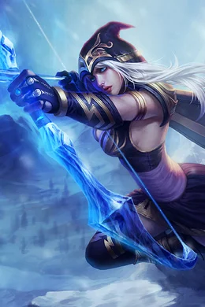

|  | BIOGRAFIA |
|---|---|
|
Ashe é a líder da tribo Freljordiana chamada Avarosan, determinada a unir as facções de seu povo e
trazer paz para a região congelada do Freljord. Desde jovem, mostrou talento excepcional com arco e flechas,
além de uma visão estratégica e calma que a destacaram como líder natural.
Apesar de sua personalidade gentil e compassiva, Ashe é firme, determinada e capaz de tomar decisões
difíceis para proteger seu povo e seu território. | |
| ARMAS | |
|
Arco de Gelo: Permite disparar flechas rápidas, precisas e que podem congelar inimigos. Magia Glacial: Ashe pode usar sua magia para desacelerar, congelar e controlar o campo de batalha, aumentando o impacto de seus ataques. | |
| Habilidades | |
|
Flechas Congelantes: Dispara flechas que desaceleram e congelam os inimigos, limitando seus movimentos. Ataques Precisos de Arco: Acerta alvos distantes com grande precisão. Visão Estratégica: Permite enxergar áreas distantes, revelando inimigos e ajudando no controle do campo de batalha. |